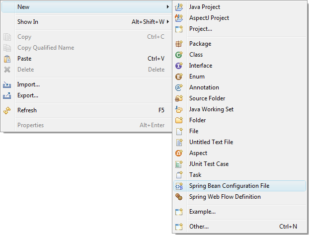

There are two entry points to creating a new bean configuration file:

This will invoke a new file wizard that will help step you through the file creation process. Select a name and parent project for the new file. At this point you can hit the finish button and a new file will be created for you, or you can hit the next button to continue through the wizard. If you choose to continue, you will be presented with a page for defining your namespace imports, and then another page for defining your config sets.
When you are done. A new bean configuration file will be created for you and opened in the configuration editor.